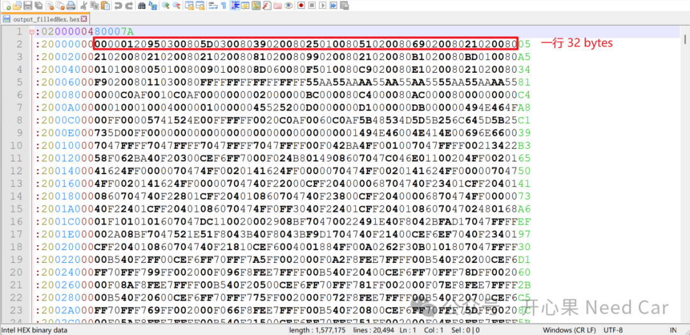
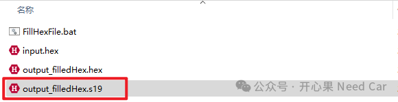
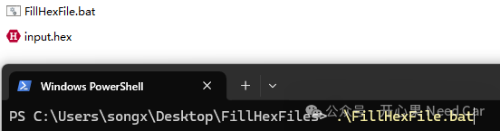
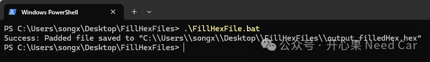
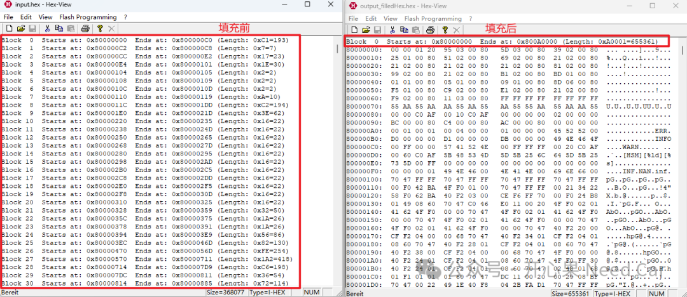
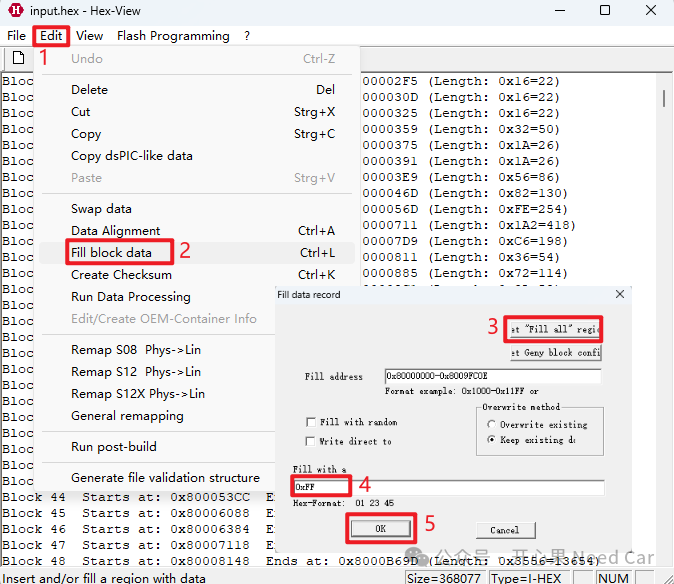

开心果 Need Car · 2025-03-14T06:32:00+08:00 · 微信原文
1、批处理脚本（*.bat）
offREM -----------------------------------------------REM Configuration parameters (modify as needed)REM -----------------------------------------------set HEXVIEW_PATH="D:\\APP\\HexViewer\\hexview\\HexView.exe"set INPUT_HEX="C:\\Users\\songx\\Desktop\\FillHexFiles\\input.hex"set OUTPUT_HEX="C:\\Users\\songx\\Desktop\\FillHexFiles\\output_filledHex.hex"set FILL_BYTE=0xFFREM -----------------------------------------------REM Step 1: Verify input file existenceREM -----------------------------------------------if not exist %INPUT_HEX% (echo Error：The input file %INPUT_HEX% does not exist!exit /b 1)REM -----------------------------------------------REM Step 2: Execute HexView commandsREM -----------------------------------------------%HEXVIEW_PATH% %INPUT_HEX% /S /FR:0x80000000-0x800A0000 /FP:%FILL_BYTE% /XI:32 -o %OUTPUT_HEX%REM -----------------------------------------------REM Step 3: Verify output file creationREM -----------------------------------------------if exist %OUTPUT_HEX% (echo Success: Padded file saved to %OUTPUT_HEX%) else (echo Error: Padding failed! Check HexView parameters/logs.exit /b 1)

set OUTPUT_HEX="C:\\Users\\songx\\Desktop\\FillHexFiles\\output_filledHex.s19" 




2、使用技巧
往期精彩回顾